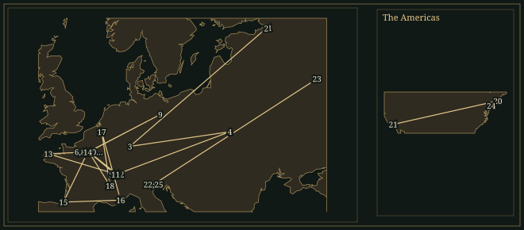

IgorStravinsky
A composer of ballets who made the placement of an accent as consequential as a change of harmony.
- Trained
- Private pupil of Rimsky-Korsakov; regular lessons 1905–08
- Lived
- Russia · Switzerland 1914–20 · France 1920–39 · United States from 1939
- Collaborators
- Sergei Diaghilev · Vaslav Nijinsky · C. F. Ramuz · George Balanchine · W. H. Auden
- Output
- Ballets, operas, symphonies, sacred choral music and chamber works; three successive approaches to tonality
51.1Life
Igor Stravinsky grew up in a St Petersburg household in which opera was a profession: his father, Fyodor, was a bass at the Mariinsky Theatre. Born at the family’s summer residence in Oranienbaum in 1882, Igor began piano lessons at ten but entered St Petersburg University to study law. Through a fellow student, Vladimir Rimsky-Korsakov, he met Vladimir’s father, whose private teaching became more important than a conservatory course. Regular lessons between 1905 and 1908 covered orchestration as practical work: distributing a passage among instruments, then comparing the result with the teacher’s solution. The Symphony in E♭, Scherzo fantastique and Fireworks belong to this apprenticeship, with traces of Tchaikovsky, Alexander Glazunov and the Russian fairy-tale orchestra.
In 1906 he married his cousin Catherine Nossenko; their four children were born between 1907 and 1914. Sergei Diaghilev heard the young composer’s orchestral music in 1909 and first employed him to orchestrate Chopin for Les Sylphides. A larger commission followed: The Firebird, with choreography by Michel Fokine. Its premiere at the Paris Opéra on 25 June 1910, with Tamara Karsavina in the title role, made Stravinsky’s reputation outside Russia. The distinction between human and supernatural characters is audible in the harmony: folk-like diatonic tunes for Ivan and the princesses, chromatic and symmetrical scales for the Firebird and Kashchei. The closing horn melody expands into an orchestral procession without abandoning its short repeating phrases.
1911–13Three ballets, three kinds of motion
Petrushka began as music for a conspicuous, argumentative piano; Diaghilev persuaded Stravinsky to turn it into another ballet. Alexandre Benois helped devise the scenario and designed the 1911 production, set in a St Petersburg Shrovetide fair. Street tunes, a barrel organ, dancers and puppet theatre occupy the orchestra in overlapping layers. The piano remains a member of the ensemble. In the puppet’s room, C major and F♯ major are superimposed: familiar triads become an abrasive six-note object. The puppet’s suffering attaches to a recurring sonority, unstable registers and sharply cut changes of scene.
For The Rite of Spring, Stravinsky worked with the painter and archaeologist Nicholas Roerich on a sequence of seasonal ceremonies ending in a young woman’s sacrificial dance. Nijinsky’s choreography used turned-in feet, bent knees and groups whose weight pressed towards the ground. Pierre Monteux conducted the premiere at the Théâtre des Champs-Élysées on 29 May 1913. The disturbance in the auditorium is documented, but accounts disagree about individual incidents and about how much music could be heard. The choreography and rival factions in the theatre belong to that history, as do the successful concert performances that followed in 1914.
The score’s opening bassoon tune derives from a Lithuanian song in an anthology associated with Antanas Juška; Lawrence Morton and Richard Taruskin later traced further borrowings. Stravinsky altered their contours, repetitions and accents. In “Augurs of Spring”, the strings repeat one chord while horns reinforce selected attacks. Elsewhere short blocks interrupt one another, or ostinatos of different lengths run simultaneously. The “Sacrificial Dance” repeatedly changes metre, but its smallest rhythmic units remain countable. The difficulty lies in the refusal to let a familiar phrase length settle over that pulse.
SwitzerlandA smaller travelling theatre
The First World War kept Stravinsky and his family in Switzerland; the Russian Revolution subsequently cut off property income and made return impractical. His next visit to Russia came in 1962. The reduction in performing forces was both economic and compositional. Renard distributes its animal fable among singers, dancers and a small instrumental group, including a cimbalom. With the Swiss writer C. F. Ramuz he devised Histoire du soldat, first performed in Lausanne in 1918: a narrator, actors, dancers and seven instrumentalists, conceived for touring. The influenza epidemic stopped the planned tour. Violin and double bass, clarinet and bassoon, cornet and trombone, with percussion, supply sharply differentiated registers.
The soldier’s violin is also his traded possession; a march, tango, waltz and ragtime become objects within the story. Their regular accompaniment patterns can pull against the melody’s grouping. Les Noces, begun in 1914, occupied Stravinsky much longer. After several instrumental plans, the version premiered in Paris in 1923 used four pianos and percussion beside four vocal soloists and chorus. Russian wedding texts pass between voices without a stable division into operatic characters. Repeated notes follow the language’s stresses; the massed keyboards make attacks and releases more important than sustained orchestral colour. The work is communal ritual presented through changing blocks of speech and song.
France, 1920–39Older music, newly articulated
Stravinsky moved to France in 1920. That year’s Pulcinella preserved eighteenth-century melodies and bass lines while changing their spacing, instrumentation, rhythm and dissonances. A phrase can sound familiar until an accent or extra repetition makes its proportions wrong. The Symphonies of Wind Instruments, also from 1920 and dedicated to the memory of Debussy, proceeded differently: contrasting wind ensembles alternate in blocks, without strings to join their attacks into a continuous surface. Its title uses “symphonies” in the sense of sounding together. These two scores reveal the range of methods gathered under “neoclassicism”.
The Octet of 1923 and the Concerto for Piano and Wind Instruments of 1924 made contrapuntal lines and instrumental attacks explicit. Stravinsky played the concerto himself, beginning a substantial career as a touring pianist and conductor of his own works. In Oedipus rex (1926–27), Jean Cocteau’s text was translated into Latin by Jean Daniélou; the sung language stands apart from the narrator’s vernacular account. Apollo (1928) restricted the orchestra to strings. George Balanchine choreographed its Paris production, beginning a collaboration that later included Jeu de cartes, Orpheus and Agon. Dance supplied specific problems of duration, weight and articulation even when the score had no narrative plot.
Stravinsky resumed regular Orthodox religious practice in 1926. For the Boston Symphony Orchestra’s fiftieth anniversary he wrote the Symphony of Psalms (1930), setting Latin psalm texts for chorus and an orchestra without violins, violas or clarinets. Two pianos and harp sharpen its sonority; the second movement combines an instrumental fugue with a choral one. In the finale the vigorous praise music gives way to a slow, regularly spaced conclusion. The restraint is written into the scoring and rhythm. He became a French citizen in 1934, while continuing to depend on international commissions and performance income.
AmericaFrom an English opera to twelve notes
Between November 1938 and June 1939 Stravinsky lost his daughter Lyudmila, his wife and his mother. He travelled to the United States in 1939 for the Harvard lectures subsequently published as Poetics of Music, married Vera de Bosset in 1940 and settled in Los Angeles. American citizenship followed in 1945. The Symphony in C, completed in 1940, makes its four movements out of deliberately exposed tonal materials; the Symphony in Three Movements (1942–45) adds piano and harp to a more forceful orchestral argument. Stravinsky associated the latter retrospectively with wartime film images, although it has no continuous narrative programme.
Seeing Hogarth’s A Rake’s Progress in Chicago in 1947 prompted an opera with an English libretto by W. H. Auden and Chester Kallman. The Rake’s Progress, premiered under Stravinsky in Venice in 1951, uses recitative, arias, ensembles and an eighteenth-century-sized orchestra. Its debt to Mozart coexists with the composer’s displaced stresses and interruptive orchestral writing. Tom Rakewell’s final delusion takes the action to Bedlam, before an epilogue steps outside the drama to address the audience. Harpsichord-supported recitative and the separate musical numbers shape the structure.
Through Craft, Stravinsky studied music by Schoenberg and especially Webern with renewed attention. Serial procedures entered gradually: the Septet of 1953 uses ordered pitch collections; Canticum sacrum (1955) includes a twelve-note movement. Agon, composed in stages between 1953 and 1957, places serial passages beside diatonic and chromatic ones within a ballet drawing on old French dance types. Threni (1957–58), setting the Lamentations of Jeremiah, extends twelve-note organisation through a large vocal work. He continued to set contrasting instrumental groups against one another and to repeat an object with altered rhythmic placement.
The late Requiem Canticles (1966) compress solo voices, chorus and orchestra into short movements separated by instrumental passages. Stravinsky continued recording into old age, leaving an unusually extensive account of how he conducted his own music, though those performances do not always agree with his published metronome marks. He moved to New York in 1969 and died there in 1971. His burial took place on the island of San Michele in Venice, near Diaghilev; Requiem Canticles was performed at the funeral.
51.2Places

Read all 25 place records and their sources
- Saint Petersburg · 1882–1910 · lived (documented)
Grew up in Saint Petersburg; studied law and took private lessons from Rimsky-Korsakov.
- Lomonosov Saint Petersburg · 1882-06-17 · born (documented)
Born in Oranienbaum during the family’s summer stay.
- Heidelberg · 1902 · travelled (documented)
Met Rimsky-Korsakov while visiting his son Vladimir.
- Ustyluh Ukraine · 1907–1914 · lived (documented)
Returned to his Ukrainian summer home to compose.
- Lausanne · 1910–1911 · lived (documented)
Moved his family to Switzerland.
- Palais Garnier Paris · 1910-06-25 · premiere (documented)
The Ballets Russes introduced his first major ballet score. The Firebird.
- Clarens Switzerland · 1911–1914 · lived (documented)
Composed beside Lake Geneva, including much of The Rite of Spring. The Rite of Spring.
- Théâtre du Châtelet Paris · 1911-06-13 · premiere (documented)
The Ballets Russes introduced Petrushka. Petrushka.
- Berlin · 1912-12 · heard (documented)
Heard Schoenberg’s Pierrot lunaire during a visit. Schoenberg: Pierrot lunaire.
- Théâtre des Champs-Élysées Paris · 1913-05-29 · premiere (documented)
Monteux conducted Nijinsky’s controversial ballet. The Rite of Spring.
- Morges Switzerland · 1915–1920 · lived (documented)
Lived at La Croix and worked on Les noces and The Soldier’s Tale. Les noces; The Soldier’s Tale.
- Lausanne · 1918-09-28 · premiere (documented)
The Soldier’s Tale premiered at the Théâtre Municipal. The Soldier’s Tale.
- Carantec · 1920 · lived (documented)
Spent the summer in Brittany after leaving Switzerland.
- Garches · 1920–1921 · lived (documented)
Stayed at Coco Chanel’s Bel Respiro.
- Biarritz · 1921–1924 · lived (documented)
Lived with his family on the Basque coast.
- Nice · 1924–1931 · lived (documented)
Made Nice his family home while touring internationally.
- Brussels · 1930-12-13 · premiere (documented)
Ernest Ansermet conducted the Symphony of Psalms. Symphony of Psalms.
- Voreppe · 1931–1934 · lived (documented)
Lived at La Véronnière near Grenoble.
- Paris · 1934–1939 · lived (documented)
Settled on the rue du Faubourg Saint-Honoré after becoming a French citizen.
- Cambridge Massachusetts · 1939–1940 · worked (documented)
Delivered the Norton lectures at Harvard.
- Los Angeles · 1940–1969 · exile (documented)
Settled with Vera in Hollywood; worked with Robert Craft from 1948.
- Teatro La Fenice Venice · 1951-09-11 · premiere (documented)
Conducted his opera with a libretto by Auden and Kallman. The Rake’s Progress.
- Moscow · 1962 · travelled (documented)
Returned to the Soviet Union for concerts after decades abroad.
- New York City · 1969–1971-04-06 · died (documented)
Moved to New York in 1969 and died there two years later.
- San Michele Cemetery Venice · 1971-04 · buried (documented)
Buried near Diaghilev on the cemetery island.
Inheritance
Specific encounters, borrowings and transformations. Follow a connection to its evidence.
What came in
What went out
51.3The Sound
How the music is built — harmony, line, rhythm, colour, form.
𝅘𝅥Accent & pulse
A steady pulse can carry irregular stresses. The first eight bars of “Augurs of Spring” remain in 2/4: six accents produce instability within a fixed bar length. The “Sacrificial Dance” changes metre, slicing short groups into unequal measures. Displaced accent and changing bar length offer distinct kinds of “irregular rhythm”.
♯Harmonic objects
Chords are often repeated objects rather than stages of a cadence. The Petrushka sonority combines C major with F♯ major; the “Augurs” chord places E♭7 above F♭ major. Both contain recognisable triadic components that function independently of conventional dominant resolution. Register, duration and accent determine how insistently the object is heard.
♮Scales & centres
The octatonic collection, alternating semitones and whole tones, came through Russian predecessors including Rimsky-Korsakov. It can contain several triads whose roots lie a minor third apart. Stravinsky juxtaposes such collections with diatonic material. His later twelve-note writing changes the ordering of pitches while retaining his preference for sharply profiled cells.
𝄢Independent layers
An ostinato can recur at one rate while a melody repeats at another. In Petrushka, different fairground musics can occupy the same orchestral space; in Histoire du soldat, melody and accompaniment resist a common phrase length. The parts remain individually simple enough to identify. Their superposition creates the complication.
𝆑Instrumental attack
Piano, percussion and wind instruments expose the beginning and end of a note. The four pianos of Les Noces reinforce this attack-based writing; the Symphony of Psalms removes violins and violas. Apollo proves the converse: with strings alone, articulation and register still separate the musical layers.
𝄋Form & borrowed material
Blocks return with altered lengths, spacing or instrumentation. A Russian song, a Gallo sonata, a French court dance and a twelve-note series can each become material for this process. Within neoclassicism, Pulcinella retains source melodies, whereas the Octet and Symphony in C compose new material within older formal categories.
51.4Works
A listening path, not a complete catalogue.
- 1909–10The Firebird (L’Oiseau de feu)Ballet; large orchestraFokine’s fairy tale for Diaghilev. Hear the full ballet before treating the later suites as its equivalent: the supernatural dances, pantomime and transitions establish the contrast with the human characters’ diatonic tunes.
- 1910–11PetrushkaBallet in four tableaux; large orchestra with pianoA Shrovetide fair and three puppets, with a prominent orchestral piano. The 1947 revision reduces and redistributes the orchestration of the 1911 score.
- 1911–13The Rite of Spring (Le Sacre du printemps)Ballet in two parts; large orchestra“Adoration of the Earth” and “The Sacrifice”. Repeated chords, short melodic cells and competing periodicities carry the argument; the final dance makes changing metre audible as bodily effort.
- 1914–23Les Noces (The Wedding)Four vocal soloists, mixed chorus, four pianos and percussion; dancersRussian wedding scenes in four tableaux. Started before most of the Swiss works but completed in its definitive instrumentation only in 1923, for choreography by Bronislava Nijinska.
- 1918Histoire du soldat (The Soldier’s Tale)Narrator, actors, dancers; violin, double bass, clarinet, bassoon, cornet, trombone and percussionRamuz’s soldier trades his violin to the Devil. The seven-player ensemble separates treble from bass without the intermediate cushion of violas, cellos or horns.
- 1919–20PulcinellaBallet; soprano, tenor, bass and chamber orchestraEighteenth-century sources, then attributed to Pergolesi, recast through changes of accent, instrumental balance and harmony. The complete ballet includes vocal numbers absent from the familiar suite.
- 1920Symphonies of Wind InstrumentsWoodwind and brassDedicated to Debussy’s memory. Contrasting blocks and a final chorale replace sonata development; the 1947 revision changes details of instrumentation and notation.
- 1930Symphony of PsalmsMixed chorus; orchestra with two pianos and harp, without violins, violas or clarinetsThree connected movements setting Latin psalms. The central movement’s instrumental and vocal fugues combine before the finale alternates animated praise with a slow conclusion.
- 1942–45Symphony in Three MovementsOrchestra with piano and harpThe outer movements use forceful repeated figures; the central Andante makes the harp prominent. The finale’s counterpoint gathers previously separated instrumental gestures into a more continuous texture.
- 1948–51The Rake’s ProgressOpera in three acts and an epilogue; English libretto by W. H. Auden and Chester KallmanHogarth’s narrative becomes a pact with the demonic Nick Shadow. Recitative and closed musical numbers provide a formal frame for Tom’s collapse and Anne Trulove’s fidelity.
- 1953–57AgonBallet for twelve dancers; orchestraBalanchine’s abstract ballet places old dance types, including a saraband and gaillarde, beside twelve-note passages. Its successive groups of dancers have counterparts in the changing instrumental combinations.
- 1965–66Requiem CanticlesContralto and bass soloists, mixed chorus and orchestraA compact selection of Latin requiem texts with instrumental prelude, interlude and postlude. Serial pitch construction serves short, separated utterances.
51.5In the Score
Short examples, engraved and playable. Press play; notes light up as they sound.
Petrushka · harmonic schematicC major and F♯ major, apart and together
The Rite of Spring · rehearsal 13One chord, six displaced accents
Histoire du soldat · technique schematicA three-note cycle against a four-quaver bar
Octatonic harmony · scale schematicEight notes containing the Petrushka chord
51.6Sister Arts
Paintings and poems that share a world with this music.

Roerich was the ballet’s co-author as well as its designer. This study belongs to the 1913 production’s first part, “Adoration of the Earth”; its receding hills and stones place collective action in a landscape. The scenario’s games, processions and sacrifice supplied occasions for contrasted musical blocks. Roerich’s archaeological interests informed these modern constructions of pagan ceremony. Commons identifies this pre-1931 design as public domain; Roerich died in 1947.

Bakst’s design belongs to the Ballets Russes production that introduced Stravinsky to Paris. Its elaborated wings and plumage made the supernatural creature visible through a dancer’s body; the score distinguishes that creature through chromatic movement, rapid figuration and orchestral colour. The production was collaborative: Fokine choreographed, Alexander Golovin designed the scenery and other costumes, and Karsavina created the Firebird.

Bilibin shows Ivan catching a feather from the bird among the apple trees, a scene from The Tale of Ivan Tsarevich, the Firebird and the Grey Wolf. The ballet’s scenario combines material from several Russian tales. The illustration establishes the existing visual vocabulary — the bird’s long plumage, the orchard, Ivan’s clothing — on which a Paris audience’s Russian fairy-tale spectacle depended. It belongs to the source tradition, outside the designs for the 1910 production.

Stravinsky saw Hogarth’s series in Chicago in 1947 and proposed it as an opera subject. This final plate supplies the destination, Bedlam; Auden and Kallman added Nick Shadow and the pact with the Devil. Hogarth’s sequential scenes find a musical counterpart in the opera’s separate arias, ensembles and recitatives. The closing epilogue, delivered outside the action, restores the moral address to an audience that the prints make through their captions and details.
51.7Listen
Recordings worth seeking out.
- The Rite of SpringCleveland Orchestra, Pierre BoulezColumbia / Sony Classical · 1969A useful recording for following the separate wind and string layers within the massed attacks. Distinguish this Cleveland account from Boulez’s later Deutsche Grammophon recording with the same orchestra.
- PetrushkaLondon Symphony Orchestra, Claudio AbbadoDeutsche Grammophon · 1980Listen for the piano’s exchanges with the woodwind and for the changing distance between the fairground bands. The ensemble writing carries the drama alongside the puppet’s chord.
- Les NocesEnglish Bach Festival Chorus and Percussion Ensemble; Martha Argerich, Krystian Zimerman, Cyprien Katsaris and Homero Francesch, pianos; Leonard BernsteinDeutsche Grammophon · 1977Recorded at Henry Wood Hall, London. Four separately staffed piano parts make it possible to follow the keyboard attacks alongside the percussion and the Russian syllables.
- Symphony of PsalmsPrague Philharmonic Choir, Czech Philharmonic, Karel AnčerlSupraphonIssued with Oedipus rex in Ančerl Gold Edition 14. Follow the instrumental fugue before the chorus enters, then the interlocking subjects; the finale’s slow closing section changes the scale of the preceding praise.
- The Rake’s ProgressIan Bostridge, Deborah York, Bryn Terfel, Anne Sofie von Otter; Monteverdi Choir, London Symphony Orchestra, John Eliot GardinerDeutsche GrammophonBostridge sings Tom, York Anne, Terfel Nick Shadow and von Otter Baba the Turk. The English text and the distinction between recitative and set numbers are central listening points.
51.8Lineage
Rimsky-Korsakov supplied orchestral craft and precedents for symmetrical scales. The early ballets affected Bartók and Prokofiev, but their folk sources and formal solutions remained distinct. Messiaen and Boulez studied the rhythmic construction of The Rite; Reich belongs to a later history of repeated patterns and independent cycles. Balanchine’s choreography is a direct, sustained collaboration across Apollo, Orpheus and Agon.
Questions to take away
Can you keep the pulse when the accents shift?
Thomas Knox’s concert-band arrangement gives the ballet’s enforced dance to brass, woodwind and percussion rather than the original full orchestra. Can you keep a steady pulse beneath the displaced accents?
The Firebird · Infernal Dance of KashcheiHow does the orchestra move from a crowded public dance to an ending in which almost nothing is left on stage?
The evening fair is a succession of public dances interrupted by a private catastrophe. Its final pages refuse an ordinary ballet apotheosis: after the crowd disperses, muted trumpets let the supposedly lifeless puppet answer back.
Petrushka (1911 original version) · IV. The Shrovetide Fair (evening)
Further reading
- Richard Taruskin, Stravinsky and the Russian Traditions (University of California Press, 1996).study
Uses Russian documents and archival sources to examine folklore, theatre and the early ballets.
- Stephen Walsh, Stravinsky: A Creative Spring (2002 edition).biography
The first part of Walsh’s biographical account; the linked catalogue records this edition.
- Pieter C. van den Toorn, Stravinsky and The Rite of Spring (University of California Press, 1988 edition).study
A concentrated study of the ballet, useful alongside its score and competing accounts of its sources.
Cite this page
No publication date is asserted. The access date below is the site build date; replace it with the date you consulted the page.
Chicago
Contrapunctus. “Igor Stravinsky.” Accessed 18 October 2026. https://mottopanikeiku.github.io/contrapunctus/composers/stravinsky.html.
BibTeX
@misc{contrapunctus-composers-stravinsky,
author = {{Contrapunctus}},
title = {Igor Stravinsky},
howpublished = {\url{https://mottopanikeiku.github.io/contrapunctus/composers/stravinsky.html}},
note = {Accessed 2026-10-18}
}